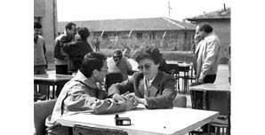
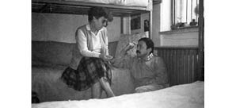

“1975’ten Sonra Bir Aile Olarak Ancak 1992’de Bir Araya Gelebildik.”
Perihan Akçam32
12 Eylül döneminde en küçük oğlum Cahit Akçam, kasım ayının başlarında Ankara’da gözaltına alındı. Devrimci-Yol örgütünün lider kadrosunda yer almaktan, adam öldürmek, yönlendirmek ve emir vermekten suçlandı. DAL grubunda bu senaryo nasıl yazılmışsa o şekilde imzalatabilmek için 60 gün işkenceye maruz kaldı. Aralık ayının ortalarıydı ben, resmi ağızdan nerede olduğunu öğrendiğimde. Cahit’i Ziraatçiler Birliği’nin taranması olayının emrini vermekle de suçluyorlardı. O olayı yapanlar belliydi, MHP davasından da yargılanıyorlardı, silahlar zaten ortada yoktu. En sonunda kanıtladılar o olayla alakaları olmadığını. Cahit idamla yargılanıyordu, 8 yıl sonra Aralık 1988’de tahliye oldu ama şubat 2011’e kadar da yargılanmaya devam etti. Dev-Yol Davası geçen Şubat ayında zaman aşımından düştü. Kısacası, 32 yıl yargılandılar. Bu davada Cahit ceza almayacaktı çünkü Cahit’in devletten alacağı var, yatması gerekenden daha fazla hapis yatmış ama bunun yanında mahkemenin istediği olursa içeri girecekler kaldı ki bunlar artık çocuk değil torun sahibi olmuşlardı.
Benim dört çocuğum var. Büyük oğlum Alper Akçam, Karabük Sosyal Sigortalar’da genel cerrahtı. Kızım Dışişleri’nde çalışıyordu. 1984’e kadar Ankara’da beraber yaşadık. Sonra o da yurtdışına çıktı. Diğer oğlum Taner Akçam33, akademisyen, zaten 1977’de Almanya’ya gitmişti. Eşim Dursun Akçam34 Eylül 1980’de taş çatlasa bir yıl kalıp geleceğini düşünerek yurtdışına çıkmıştı. Demokrat gazetesini çıkarıyordu, onun işleriyle ilgili bir seyahatti. Kendi pasaportuyla legal yollardan ülkeden çıkmıştı. Biz 1971 İhtilali’ni de yaşamıştık, o zaman eşim içeri alınmıştı. 1971’den sonra tekrar işbaşı yapamamıştı ama hiç değilse ortam biraz daha yumuşamıştı. Bu da öyle olur sanıyorduk. O yüzden bir yıl kalır döner diyorduk, 11 yıl Almanya’da kaldı. Belki o kadar uzun kalacağını bilseydi herhalde 55 yaşında hiç yabancı dil bilmeyen bir kişi yurtdışına gitmezdi. Dolayısıyla ben bu süreçte çoğunlukla yalnızdım.
1980 İhtilali olmuş, aşağı yukarı ekimin sonundayız. Büyük oğlum Alper Akçam Karabük’te doktordu, eşi doğum yapacaktı. Ben Karabük’e gittim ve 3-5 gün kaldım. Cahit evdeydi, telefon etti, anne dönme, ben de Karabük’e geleceğim dedi. Ben de üç dört gün daha bekledim. Biz kirada oturuyorduk o dönem ve evimizde telefon yoktu, kızım çalışıyordu ve ancak dairesinden telefon edebiliyordu. Araya hafta sonu da girince hiç arayan olmadı. Cahit’ten ses çıkmayınca ben pazartesi döndüm, eve geldim. Tabii eve gelir gelmez Cahit’i sordum. Kızım dedi ki anne, iki gün önce geldi, buradaydı. O gece banyo yaptı, sabah gitti ama ondan sonra Cahit’ten ben de haber alamadım.
O gece yattık ve sabaha yakın kapının zili çaldı. Ben Cahit geldi sandım. Kasımın ilk günleri, soğuk bir gece ve Ankara’ya ilk kar yağıyor. Kalktım, kim o dedim. Polis, açın kapıyı yoksa kırarız dedi. Açtım haliyle. 5-6 tane sivil polis kapıda. Hepsinin tabancaları elinde, ateş etmeyin içeride bir şey yok dedik. Bu evde kim oturuyor, kim bu evin sahibi diye sordular. Kızım dedi ki ben oturuyorum. Nerede çalışıyorsun diye sordular. Dışişleri Bakanlığı’nda çalıştığını söyledi. Hemen bastılar telsize, kardeşinin evini bulduk dediler ve ben anladım ki bir şeyler olmuş. O arada girdiler eve. Cahit’i bu mahallede bir evde elimizden kaçırdık dediler. Herhalde Cahit, arkadaşlarıyla bir evde yatıyormuş o gece. Eve baskın düzenlenmiş, orası bekâr eviymiş yani üniversite öğrencilerinin evi, Cahit de içeride. Kim o deyip de polisi duyunca Cahit pijamasıyla ve yalınayak bir şekilde pencereden atlayarak kaçmış. Bize yakın bir evmiş. Sonradan ben o evin nerede olduğunu öğrendim. Hatta gittim dışarıdan baktım. Atlıyor ve bizim sokağa geliyor, Gaziosmanpaşa’da, Şairler Sokak, hiç unutmam. Kapıya kadar geliyor, apartman yeni bir apartman, kapısı kilitli ve Cahit’te anahtar yok. Kapıyı açamıyor, zil sistemi de yok. Dolayısıyla bize duyuramıyor ve geri dönüyor. O sokakta da hep devriye gezerdi askerler. Bunları polis anlatıyor bana. Devriye, gezerken Cahit’i görüyor pijamasıyla. Sokağa çıkma yasağı var tabii ki. Dur diye bağırıyorlar arkasından. O arada Cahit’i nişan alan askerin ayağı kayıyor, düşüyor ve ateş edemiyor. Eve gelen polis dedi ki “Bir sadaka varmış yahut da Cahit’in bizden çok çekeceği var.” Aynen bu sözü söyledi “Asker ateş edememiş, oğlunuz izini kaybettirmiş.” Eve karakol kurdular ve polislerin bir kısmı gitti. İki polis geldi içeriye, oturdu, ellerinde silahları, telsizlerini de masanın üstüne koydular. Sabahın dördü oldu. Yeni bir binadayız, kalorifer pek az yanıyor. Onun için ev buz gibi. Tabii bir sinir bozukluğu yaratıyor bunlar. Bizi bir yere bırakmıyorlar. Perdeleri açmayın, lambaları yakmayın diyorlar. Biz o şekilde 1-2 saat oturduk ama ben çok üşüdüm çünkü çorabımızı bile giymemişiz. İki tane polis oturuyorlar, çıt çıkmıyor evde. En sonunda dedim ki üşüdüm, yatağıma gideyim, sırtıma bir şey alayım, neyse polisler bana izin verdiler. Öylece sabahı ettik. Aşağı yukarı iki saatte, üç saatte bir de geliyorlar eve, kimse var mı, kim geldi diye soruyorlar. Kimse gelmiyor, ona da çok seviniyorum. Çünkü daha yeni taşınmışız, akrabalar bile bilmiyor evin adresini. Yani evi kiralamaktaki amacımız da buydu aslında, polisin gözünden uzaklaşmak, çünkü bizim ev eşim Dursun Akçam ve oğlum Taner Akçam’dan dolayı bilinen bir evdi. Biraz daha sakin yaşamak istedik, işin aslı bu. Kendi evimizi kiraya verdik, üstüne de biraz koyarak sakin, güzel bir yerde ev kiraladık. Kızım da yeni evli, beraber oturuyoruz.
Biz artık polislerle ahbap olduk. Acıktık. Karnımızı doyuracağız, çay yapalım dedik. Mutfağa izin verdiler, çay yaptı kızım, buyrun denildi. Yok dediler, biz görevdeyiz, gelemeyiz mutfağa. Neyse onlara da ikram ettik. Onlar da aç tabii. Böylelikle ilişki kurduk, arada konuşuyoruz. Onlar da gelenlere soruyorlar, Cahit’i yakaladınız mı, buldunuz mu diye. Yok dediler. Galiba öğleden sonra üçe dörde kadar karakol kaldı ve gittiler. En son gelen ekip başı, tamam gidelim, burada işimiz bitti dedi. Hatta giderken de polisin biri, o insan ilişkilerinden dolayı olsa gerek, “Cahit’i yakaladınız mı, buldunuz mu?” dedi, diğerleri hayır, dediler ve çıktılar. Ben o gün hiç evden çıkmadım. Kızıma ve damadıma da işe gidebilirsiniz dediler.
Mevsim sonbahar, günler kısa. O gün evde kaldım, ertesi gün kalktım ve başladım Cahit’i aramaya. Nereye gidebilir, kime gidebilir? Ankara Siyasal’a gitsem ne öğrenirim, hiçbir şey öğrenemem. Avukatlara gittim, anlattım böyle böyle dedim. Her gün yüzlerce kişi götürülüyor ama hiç haberimiz yok Cahit’ten dediler. Birkaç gün öyle gezindim. Cumhuriyet gazetesine gidiyorum, Hürriyet’e gidiyorum, az çok da aileyi tanıyorlar. Gidiyorum Cumhuriyet gazetesinde gayet iyi karşılıyorlar. Soruyorum, hiç haberimiz yok, haber alamıyoruz diyorlar. Milliyet’e gidiyorum. Avukatlarla, gazeteciler arasında geziniyorum.
Bir gün kapı çaldı, açtım, Adnan Binyazar ve eşi geldi. Dediler ki Fakir Baykurt’un büyük kızını gözaltına almışlar. Fakir de Almanya’daydı o zaman. Muzaffer Hanım gelmiş, biz ona gidiyoruz geçmiş olsuna, sen de gelir misin diye sordular. Ben de geleyim dedim, belki bir şey duyarım. Kalktık, gittik. Kızının kocası da Siyasal’da öğrenciymiş. Cahit’in olayını anlattım, polisin eve geldiğini söyledim. Çocuk bana “Valla Perihan Teyze, her gün topluyorlar, ben de hiç dışarıya çıkmıyorum ama dışarıda da pek kimse kalmadı” deyince ben işi anladım. Bu arada CHP’den milletvekillerinin gözaltına alındığını duymuştum, kalktım gözaltına alınan İzmir Milletvekili Ferhat Aslantaş’ın evine gittim. Yanlarında oturan, hukukta okuyan bir kızcağız vardı, babası avukattı, Remzi Şirin, o da geldi oraya. Ben Cahit’in olayını anlattım aman kızım ne olur Hukuk da Siyasal’a yakındır, bir duyduğun, işittiğin bir şey olursa benim haberim olsun dedim. Her gittiğim yerde böyle not bırakıyorum aman duyarsanız, bilirseniz beni haberdar edin, diye. Sonra aradan birkaç gün geçti. Ferhat Aslantaş’ın hanımı koşa koşa eve haber getirdi. O da eşini görmeye gidiyormuş, o arada kızcağız haber getirmiş, gözaltına alınıp o anda salıverilen bir kişi Cahit’i DAL Grubu’nda gördüğünü söylemiş.
DAL Günleri
Ben birkaç defa DAL Grubu’na gittim; fakat hiçbir şey bulamıyorum, içeri bile almıyorlar. Gidiyorum, bir liste atıyorlar önüme. İşte bu listede diyorlar, ben listeyi tarıyorum, hatta, ne çabuk okudun be kadın diyorlar, beni azarlıyorlar. O listedekiler dışında başka kimse yok diyorlar. Gözüyle gören var; fakat bunu söyleyemiyorum. Siyasal’ın dekanına gittim bir gün. Çünkü onu da tanıyoruz. Gideyim dedim, belki okula bir dosya gelmiştir, okulun öğrencisi sonuçta, oradan bir haber alabilirim. Neyse bin bir zorlukla girdim, sağ olsun beni kabul etti. Anlattım derdimi. Dosyayı getirdi, baktı, yok dedi. Zaten hep bakıyorum, Cahit’in hiç adını görmedim dedi. Ben de içeride görenler var; fakat bana Cahit içeride değil diyorlar ve içerideki listeyi önüme koyuyorlar, orada da Cahit’in adı yok dedim. Dedi ki sizi ben bir yere yollayayım, polis teşkilatına. Oranın müdürü Dursun Akçam’ı da iyi tanır, gidin bir de oradan sorun. O, bir pusula yazdı elime verdi. Ben kalktım, Kızılayda 1. Şube, Emniyet’le ilgili bir birime gittim. Elimdeki pusulayı gösteriyorum ve o kişiden randevu almak istiyorum, görüşmek istiyorum. Haber verdi birisi yukarıya. Galiba dördüncü kata kadar çıkardı. Her katta arıyorlar, tarıyorlar beni. Çantam falan aşağıda, ben Müdür Bey’in huzuruna çıktım. Tanıttım kendimi, buyrun dedi, derdimi anlattım ama içeride görenler var demiyorum. “Ben oğlumu arıyorum, neredeyse 20 gün geçti, belki daha çok oldu. Oğluma ulaşamıyorum. Belki de benim oğlumu öldürdü bir yere attı polis. Bir evden kaçıyor çocuğum ve ondan sonra hiçbir yetkili gelip, biz senin oğlunu yakaladık, senin oğlun falan yerde demedi bana. Belki 20, belki 25 gün geçti. Gezmediğim yer, çalmadığım kapı kalmadı” dedim. Birkaç yere telefon etti benim yanımda, aldığı yanıtlar bana umut ışığı vermedi. Beni öğleden sonra bu telefondan arayın, ben size başka yerlerden öğrenir, oğlunuzun nerede olduğunu haber veririm dedi.
Ben çıktım, Kızılay’da herhalde bir 3-4 saat gezindim çünkü evde telefon yok. Gittim, verdiği numaraya postaneden telefon ettim. Konuştuğum kişi, yüksek mevkide biri, oğlunuz Emniyet teşkilatında yok dedi. Nasıl olur dedim. Siz dedi en iyisi arkadaşlarına gidin. Kapattım telefonu, Allah kahretmesin sizi dedim. Siz akıllı ben de zırdeliyim. Ben gideceğim, gelişigüzel öğrenci kapısı çalacağım ve siz de arkamdan onları toplayacaksınız. Amaç buydu, başka hiçbir şey değildi. Neyse ben eve geldim. Belki 1 gün sonra, belki 2 gün sonra kızım geldi daireden öğle yemeğine. Anne dedi, Naime Abla bugün telefon etti, eşi, Davut Amca’nın (Aksu) ölüm yıldönümüymüş 2 gün önce, sen gitmemişsin, çok ağlıyor. Çünkü Naime bana abla derdi, o benim kardeşimdi. Kalkayım dedim, ertesi gün gideyim. Kalktım, Davut Aksu’nun kardeşini ziyarete gittim akşamüstü, orada başka konuklar da var. Onlar da Karslı, hepsi okumuş, yazmış, birtakım yerlerde olan insanlar. İçlerinde benim de tanıdığım bir hâkim var. Anlattım olayı, resmi ağızdan Cahit’in nerede olduğunu öğrenemediğimi söyledim. Emniyet’te gören var gözleriyle ama bana yok diyorlar, dedim. Ben öğrenirim dedi. Neyse 2 gün sonra yine o kanaldan Naime telefon etti. Ben koşa koşa gittim. Konuştuğum kişi oradaydı. Dedi ki oğlunuz DAL’da, hem de Dev-Yol’un lider kadrosunda olduğu gerekçesiyle içeri almışlar ve ondan yargılayacaklar.
Benim DAL maceram böylece başlamış oldu. Gaziosmanpaşa’da oturuyoruz. Her sabah ama her sabah elimde bir poşet, içinde çamaşırları, çorapları, bir çift ayakkabı, kazak, hırka, ne bileyim işte, aklıma ne gelirse dolduruyorum çantaya. O benim yedek parçam. İniyorum Kızılay’a. Buradan dolmuşa biniyorum, Emniyet’in önünde iniyorum ve gidiyorum DAL’a. Günlerce taşındım. Sonradan aklıma geldi. Emniyet 1. Şube müdürünün kız kardeşi Demirlibahçe Ortaokulu’nda öğretmendi ve ben de Demirlibahçe Ortaokulu’na dışarıdan derse gidiyordum. Ahbaplığımız vardı ve kardeşinin de bu görevde olduğunu biliyordum. En son aklıma o geldi. Çünkü beni merdivenlerden yukarı çıkartmıyorlar DAL’da. Sahanlığa giriyorum, yok diyorlar. Ben her polise bir şeyler soruyorum, hiçbir yanıt alamıyorum. En sonunda başladım müdürün bulunduğu 6. kata da çıkmaya. Artık içeriye giriyordum, hiç kimseye sormadan 6. katın sahanlığına çıkıyordum. Her gelen azarlıyor, kovalıyor, burada duramazsın diyor ama ben inat ediyorum, 1. Şube müdürü ile görüşeceğim. Randevunuz var mı, randevum yok ama randevu istiyorum, diyorum. Bana randevu da vermiyorlar. Müdür toplantıda diyorlar. Ben akşama kadar hiç üşenmeden orada bekliyorum. Girenden çıkandan medet umuyorum. Bütün polisler beni tanıyor artık. Ne kadınmışsın, ne inatçı insanmışsın diyorlar, işte oğlunu terbiye etseydin olmaz mıydı diyorlar. Karşıma dikiliyorlar Taner Akçam’ın da annesiymişsin, yaman oğullar doğurmuşsun diyorlar. Hepsi bana hınçla bakıyor. Halbuki ben orada bir anayım, bir vatandaşım ve oğlumu arıyorum, benim bütün amacım bu, resmi ağızdan “Evet senin oğlun burada” desinler. O arada gazetecilere gidiyorum, onlar da artık biliyorlar, Cahit içeride diyorlar, hepimiz biliyoruz ama resmi ağızdan bana “Oğlunuz burada” denilmiyor. Ben de onun için inat ediyorum, bir yetkiliden evet oğlunuz bizim elimizde demesini istiyorum. Bir gün karar verdim, bağıracağım dedim. Emniyet’in 6. katında bağıracağım ve olay çıkaracağım. İçeriye, müdürlerin olduğu bir ara var, buradan bir kapı açılıyor ve müdürler hep o taraftan girip çıkıyorlar ama o kapı kapalı ve burada 2 resmi polis duruyor. Yasaklıyorlar, giremezsiniz diyorlar.
O gün gerçekten çok direndim ve bağırdım. “Yeter. Bana niçin randevu verilmiyormuş? Ben vatandaşım. İçerdeki görevli kişi de benim işlerimi yapmak için orada, öyleyse beni kabul etmek zorunda” diyorum. Birisi dedi ki müdür bey gerçekten toplantıda. Yardımcısı yok mu, başka birisi yok mu? Ben bir şey soracağım, oğlum burada mı değil mi? O kadar. En sonunda olmadı, 5. kata indim. Gittim, kapıyı tıklattım, orada oturan kişi: “Ne var? Yine niye geldin?” dedi. Elimdeki torbayı koydum, bakın dedim, oğlum buradaysa bunu ulaştırmak zorundayım, bana oğlumun burada olduğunu resmen söylemek zorundasınız çünkü oğlumu burada görenler var. “Ee görmüşler ya mesele bitti” dedi. Hayır mesele bitmedi, görenler buradan çıkanlar ama ben bir resmi ağızdan duymak istiyorum. Evet oğlunuzu aldık, hastalandı, öldü, intihar etti ve şimdi yok, onu da diyebilirsiniz dedim. En son adam dedi ki “Usandım senden.” O da bir yetkili. Bir pusula yazdı 6. kattaki polislere: “Bu hanımı müdürle görüştürün”. Bu kadardı yazı zaten ama yine oraya çıktım ve götürdüm polisin önüne koydum. Buyrun dedim, bekleyeceksin dediler ama öğleden sonra olmuştu. Beklerim dedim ben ve beklemeye başladım. Belki akşamın 4’üydü, 5’iydi. O arada bana akıl vermeler devam ediyor, Taner de senin oğlun mu diyenler, Cahitler adam öldürmüş, şimdi içeride bülbül gibi ötüyor diyenler oluyor. Bu arada birçok şeyi de gördüm tabii ki. Çocuklarını arayan, kızını arayan, oğlunu arayan, eşini arayan gencecik kızları gördüm. Onların nasıl dövüldüklerini gördüm. Çok şeye tanık oldum. En sonunda dediler ki buyrun müdür bey sizi bekliyor. Baktım kapıda müdür yardımcısı yazıyor, içeri aldılar beni. Ne istiyorsunuz hanımefendi dedi. Önce dedim ben oturabilir miyim? En aşağı 5 saattir ayaktayım. Hemen masasının karşısındaki koltuğa oturdum. Anlattım. 6. kattaki adam bir yerlere telefon etti. Döndü bana “Tamam oğlunuz buradaymış” dedi. O zaman bu çamaşırları vereceksiniz dedim. Hayır dedi, bizim yetkimiz yok, veremeyiz. Vermek zorundasınız dedim, çünkü ben buraya bir aydan fazladır taşınıyorum. Yemek bile alındığını gördüm. Benim çocuğuma çamaşırlarını vereceksiniz. Çamaşır değiştirecektir. Onun için beni bir kat yukarıya gönderdi, çıktım. Dedi ki işte öğrenmişsiniz ya oğlunuzun burada olduğunu, mesele bitti. Bu çamaşırları bu da parası dedim. Gönderemeyiz dedi. Ben buraya koyarım da dedim ister gönderin, ister göndermeyin. Ben eve huzur içinde giderim oğluma çamaşır verdim diye. Neyse telefonu kaldırdı, bir yere telefon etti. Bakıyorum ya bir numara çeviriyorlar, ya iki numara. O binanın içinde oluyor bunlar. Bana birisini gönderin dedi. O arada müdür yardımcısı bana nutuk çekiyor tabii, şartlarımız eşit değil ki ne cevap vereceksin. Susmuyorum yine de. Ben buraya nasihat dinlemeye, akıl almaya gelmedim dedim. Öyle dedi, öğretmenlik yapmışsınız ama kendi çocuklarınızı yetiştirememişsiniz. Size göre yetiştirememişim ama benim çocuklarımın çok iyi yetiştiğini ben biliyorum. Çünkü hepsi Türkiye’nin saygın okullarında okudular, ben yetiştiremedimse o öğretmenler yetiştirebilirlerdi ama demek ki çok iyi yetiştirmişler. O da ayrı bir konu dedim. Çağrılan polis odaya girdi, başı 3 numara ile tıraş edilmiş, şu anda gözümün önünde, belinde iki tane tabanca var. Sivil, gömlek var sırtında ama iki tabancası dışarıda, “Beni istetmişsiniz Müdür Bey” dedi. Müdür Bey dedi ki “Bu Cahit Akçam’ın annesiymiş, çok ısrar ediyor bu çamaşırları oğluna vermek için.” Orada saçıldı çamaşırlar ortaya. Zaten hep kontrol ediliyor ama ben o çamaşırları günde bir değiştiriyorum, yıkıyorum, tekrar ütülüyorum, tekrar getiriyorum, işim ne. Saydılar, liste tutuldu, liste de içine konuldu. Paranın miktarı da yazıldı, torbanın içine konuldu. “Bu Hanım’ı aşağıya götür, bu torbayı da Cahit’e verin ve Cahit’in imzasını annesine getirin” diye talimat verdi müdür yardımcısı. Ben de diretiyorum çünkü Cahit’in imzasını alacağım diye. Katları iniyoruz sivil polisle. Asansöre binmiyor; fakat her katı indikçe polise sarılıyorlar. Oo ağabey sen mi geldin diyorlar aradaki polisler çünkü her katın böyle bir sahanlığı var. Anladım ki bu buraya pek gelmeyen bir polis, DAL’daki polislerden birisi. Bana, her katı inişimde sen burada bekle diyor, benim oğlum yaşında birisi, Cahit’in yaşında belki. Ben bekliyorum. O içeriye de giriyor, 2-3 dakika bir görünüyor, onlarla ahbaplık yapıyor, çıkıyor. O esnada ben aklımca polisle ahbaplık kurmayı düşündüm. Merdivenleri inerken, nerelisiniz dedim, şöyle bir döndü. Çünkü o önde ben arkada yürüyoruz. Erzurumluyum dedi. Ama arkasından da yapıştırdı, niye sordun dedi. Birisine benzettim galiba dedim. Sen nerelisin dedi, ben Karslıyım diyeceğim; fakat Kars’la, Ardahan’ın durumunu biliyorum. Karslıları Erzurum’da dövüyorlar, hatta trenden indikleri anda. Onun için Karslıyım diyemedim. Zaten nüfus cüzdanımda da Artvin yazıyor, Artvinliyim dedim. Bu anı hiç unutmam, kendi kendime güldüm sonra. Güya durumu kurtarıyorum. Kars’ın Artvin’den veyahut Artvin’in Kars’tan ne farkı var. Haa öyle mi dedi polis de.
Biz indik, bir salona aldı beni. Ben o salonu da tanıyorum. Çünkü çok gittim, o pencereleri çok tıklattım, çok defalar o kapılar açıldı, senin oğlun burada yok denildi. Bana burada otur dedi, oturdum. Camlı bölmenin ardındaki merdivenlerden indi polis. Ben de yan döndüm, gözümle takip ediyorum. Demek ki alt katlara iniyor, DAL denilen yere. Kısa bir süre sonra döndü, geldi. Torbada birkaç çamaşır, bir pusula: Anne gönderdiklerini aldım, çok sağ ol, ben iyiyim. Hâlâ durur, hâlâ saklarım. Ben aldım ve eve geldim. Dünyalar benim oldu. Ben Cahit’in orada olduğunu biliyordum ve resmi bir yazı var elimde, bir belge.
Bu günlerce sürdü. Ben yine oralara gittim, yine o kapılardan geçtim, bu defa DAL’a da girdim. Hatta sonradan gazetelerin ve çocukların anlattığı işkencecilerle de birebir karşılaştım, onlara da derdimi anlattım. O pusula benim elimde bir belge oldu. Benim oğlum burada, bakın ben geldim, oğluma para gönderdim, elbise de gönderdim ama şimdi gene göndermek istiyorum diyebildim. Onu da bir tutanak olarak kullanıyorum, 2 kere daha başardım, birinde çamaşır ve para gönderdim, birisinde de yalnız çamaşır gönderebildim, para gönderemedim.
Cumhuriyet gazetesinde bir okurdan bir isim öğrendim, o kanalla ben bir polisi göreceğim. O polisle göndereceğim bu defa göndermek istediklerimi çünkü artık 1. Şube’ye çıkarmıyorlar beni. Gittim tıklattım o küçük pencereyi, bir polis çıktı, ne istiyorsunuz dedi. Öğrendiğim o polisin adını söyledim, görüşmek istiyorum dedim. Neyisiniz dedi? Ben onun yengesinin arkadaşıyım dedim çünkü öyle denilmişti bana da, yengesinin adını da biliyorum. Bir bakayım dedi. Gitti, sonra önüme iki polis geldi. Küçük dikdörtgen pencereye. Sonraki gelen dedi ki, o kişiyi tanıyor musun? Hayır dedim, tanımıyorum ama ben yengesinin arkadaşıyım. Ne istiyorsunuz dedi. Oğluma çamaşır ve para göndereceğim, bir de imzasını istiyorum dedim. Parayı alamayız ama çamaşırı alalım dediler. Çamaşırı verdim. Bunlar gittiler, bir süre sonra geldiler, bana imzalı, çamaşırları aldım diye bir yazı getirdiler. Şöyle bir baktım yazıya. İkisi de o küçük dikdörtgende karşımda duruyorlar bu arada. Başımı kaldırdım, bu benim oğlumun yazısı değil dedim. Çünkü hiç benzemiyordu. Sonradan gelen polis, “Ya o kadar yazabildiyse...” dedi. Benim tepemden aşağıya kaynar sular döküldü çünkü o arada ölenler var, işkencenin derecesini yavaş yavaş duyuyoruz, hastaneye kaldırılanlar var, bunları da duyuyoruz. Onun için ben hemen çıktım, Cumhuriyet gazetesine geldim, Erbil Tuşalp’le karşılaştım. O gün DAL’da birisi ölmüş. Hemen bir panik oluştu. Ölen Cahit değilmiş ama ben anladım ki Cahit’e bir şey olmuş. Nitekim 2 gün önce merdivenlerden aşağı inerken polisler Cahit’i dövmeye, merdivenden yuvarlamaya ve tekmelemeye başlıyorlar. Biri, sen hâlâ ölmedin mi diye Cahit’in başına silah dayıyor. Tam o polis silahı ateşleyeceği sırada bir başkası bunu elinden tutuyor, o sırada silah ateş alıyor ve bir kargaşa oluyor. Cahit’i kollarından tutuyorlar, sahanlıktan içeriye götürüyorlar. O gün de DAL grubunda Behçet Dinlerer adında bir kişi ölmüş. O yüzden ikinci bir kişinin daha ölmesini istemedikleri için Cahit’i Numune Hastanesi’ne kaldırıyorlar. Cahit aldığı darbelerden komaya girmiş. Cahit şöyle anlatıyordu: “37 gün geçmişti, lavaboda ellerimi yıkıyordum, karşımda birisini gördüm, o bana baktı, ben ona baktım ama tanıyamadım. Sonra ben gözlerimi kırptım, o da gözlerini kırptı. Anladım ki oradaki benim.” Artık ne hale gelmişse, hastaneye geldikten sonra aradan 37 gün geçmiş.
Mamak Günleri
Bir akşam televizyonda Dev-Yol militanları Mamak’a gönderildi diye bir haber dinledik. Çünkü artık peyderpey gönderiliyorlar. Ben o arada Mamak’a da taşınıyorum. Orada da bir liste var, asker listeyi veriyor, bakıyorum Cahit yok, ben yine Emniyet’e geliyorum. O akşam zaten TRT, devletin kanalı açıkladı, Dev-Yol militanları Mamak’a götürüldü diye, kadroyu da açıklıyorlar, örgütün başında olanları, Cahit var, Taner var. İkisi de arka arkaya, biri Siyasal’dan terk, bir Ortadoğu’dan terk diye anlatılıyor. Ertesi gün ben Gaziosmanpaşa otobüsüne bindim. Başımda lise öğrencisi iki delikanlı, ayakta dikiliyorlar. Birbirlerine anlatıyorlar. “Bunların ikisi de kardeş, itoğlu itler, pezevenkler. Birisi Ortadoğu’da öğrenciymiş, biri Siyasal’da. İkisi de okulu terk etmişler, ikisi de adam öldürmüş” diyorlar. Ben de böyle oturuyorum koltukta ve onları dinliyorum. En son dayanamadım, dedim ki oğlum, her işittiğinize inanmayın. Ne demek istiyorsun teyze dediler. Oğlum dedim, öyle gazetede her okuduğunuza da televizyonda her duyduğunuza da inanmayın. Bunların birçoğu o genç insanları halkın gözünde küçük düşürmek için uydurulmuş şeyler. Sen öyle bil falan dediler. Ne diyeceksin, bir şey diyemedim. Tabii çok ağırıma gitti çünkü çok kötü küfürler ettiler.
Bizim Mamak faslımız başladı. Hemen o gün gittim, salı günüydü. Dediler ki Cahit A Blok’ta, A Blok’un kapısını öğrettiler, orası görüş kapısıymış, görüş kapısına gittim. Bir sürü insan, çok büyük bir kalabalık var. Çocuklarını, yakınlarını görmeye gelmişler. Salı günleri A Blok’un görüş günüymüş. Bana dediler ki, oğlunuz bugün geldi, onun için şimdi tecrittedir, görüşemezsiniz. Bir hafta sonra salı günü gelin, burada adınızı yazdırın, o işlemlerden geçin, oğlunuzu görürsünüz. Ben bir haftayı iple çektim. O arada avukat gönderdim hemen. Avukatlara, çok saydığım rahmetli İbrahim Tezen’e, Nevzat Helvacı’ya dedim ki, böyle böyle Cahit Mamak’a gitmiş. İbrahim hemen gitti, ben gideyim vekâletini alayım dedi. O gün bekledim, İbrahim gözüyle görmüş. İyi dedi, Cahit’in selamı var.
Ben sanki çocuğum tatile çıkmış gibi sevindim. DAL’dan kurtuldu, hapishaneye geldi ya. Hapishane şartları malumumuz çünkü Taner’den de biraz biliyorum ama yine de bana göre mesire yerine gitmiş gibi geliyordu. Meğer burası daha betermiş. Onu da 8 yıl içinde yaşayıp görmüş oldum.
Salı gününü iple çektim ve o gün torbalar dolusu yemekler, içecekler, çamaşırlar doldurdum, götürdüm. Analar dediler ki boşuna zahmet etmişsin, bu yemekleri vermezler, onlar tecrübe sahibi olmuş tabii ki, ayırdılar. Bir çift çorap, bir tane külot, bir tane fanila, bir tane gömlek, bunları verebilirsin dediler. Diğerlerini kenara koy, sonra gel al dediler. Neyse gittim, oğlumu gördüm. Zaten 3 dakika görüş, o ellerini arkasında tutmak zorunda. O zaman bağıra bağıra konuşuyorduk. Telefonu sonra buldular, cam var arada, onun da önünde cam var, ayrıca demirler var. Öyle yüz yüze görüşme diye bir şey yok. Camın arkasından görüşüyorsunuz. İlk görüşte, Cahit’i gördüğüm anda böyle bakakaldım. Uyarıyorlar zamanınız 3 dakika diye, oğlum nasılsın dedim, görüyorsun ya dedi iyiyim. O da sordu, falan nasıl, filan nasıl, o da merak ediyor bizleri. Biz çok çok iyiyiz dedim. Bir isteğin var mı dedim. Zaten ilk görüşte dedi ki, anne bir reçete göndereceğim o reçetenin ilaçlarını bana gönder dedi, bitti. Çıkın dediler, çıktık.
Ben 8 yıl boyunca Mamak’ın kapısına taşındım. Tutuklu yakınlarıyla birlikte 8 yıl o kapıda bekledim.
İşkencenin Belgesi
O reçete Cahit’e Numune Hastanesi’nden böbrekleriyle ilgili bir problemden dolayı verilmiş bir reçeteydi. 1982’de duruşmalar başladı. Cahit’e de bir 6 ay sonra sıra geldi çünkü bir çarşamba, bir de cuma günleriydi duruşmalar. O reçete belge niteliğindeydi. Cahit’in işkence gördüğünü, neredeyse komaya girdiğini ve hastaneye kaldırıldığını ispat etmemize yardımcı oldu. Mahkeme heyeti hastaneye bir yazı yazdı. Böyle bir hasta geldi mi, diye sordu. İki-üç ay sonra hastaneden o isimde bir kişi Numune Hastane’sine gelmedi diye bir yanıt geldi. Bir görüşte Cahit bana dedi ki “Anacığım sana bir zahmet daha, bu belgeyi bulacaksın sen. Numune Hastanesi’ne götürüldüğüm gün 24 Kasım, bir gece kaldım hastanede, reçetedeki ilaçlar ve doktorun koyduğu teşhis çok önemli. Doktor o teşhisi ve kaydımı düşmüştü, o sayfa lazım.” Ben uğraştım günlerce. Çünkü oğluma duruşmada yalan söylüyorsunuz, işte bir yalanınız da bu, böyle bir olay olmamış, sen hastaneye kaldırılmamışsın diyorlar. Cahit dedi ki, anne çok zoruma gitti, bir de yalancı duruma düştüm. Ben 10 gün sonra o belgeye ulaştım. Aradan neredeyse bir 3 yıl geçmiş. O belgeyi de götürdük. Çünkü oradaki tanı idrarda kan olduğuydu. Doktorların teşhisine göre de bu durum ya çok ağır böbrek hastalarında oluyor ki bunlar makineye bağlı yaşarlarmış veyahut da çok büyük darbe alanların idrarında oluyor. Cahit makineye bağlı yaşamıyor, darbe sonunda oluşan bir şey bu. Bakın yalancı biz değiliz dedik mahkemeye.
Açlık Grevleri
Bu arada tutuklular tek tip elbiseyi protesto etmek için 1984’te açlık grevlerine başladılar. Bu dönemde de yalnızca içerideki çocuklarımıza işkence, eziyet etmiyorlardı, Mamak’ın kapısında bize de eziyet ediyorlardı çünkü 3 dakika görüşebilmek için en aşağı 4 saatinizi, 5 saatinizi veriyordunuz. Birtakım işlemlerden geçiyordunuz, çizmeleriniz bile açılıyor, onların içine bile bakılıyor. Hatta Cahit’in gözaltına alındığı dönem, 30 Ekim’de doğan torunum artık 4-5 yaşına gelmişti, o da babasıyla birlikte amcasını ziyarete geliyordu, açık görüş oluyor. Bir gün görüşten çıktık, çocuğun yanakları kıpkırmızı, babası dedi ki Başakcım ne oldu? Cebinden tokalarını çıkardı. Baba dedi, bu tokalar benim cebimde kalmış ya bunu yakalasaydılar amcama ne yaparlardı. Bize de aynı şeyler yapılıyordu, hepimiz hizaya giriyorduk, uygun adım yürüyorduk içeri girerken. Blokun kapısına giriyorduk, otobüsten tek tek inmek zorundaydık, kadınlar ayrı bir sıra, erkekler ayrı bir sıra. Elbise vereceğiz, asfalt yoldan yürüyoruz, iki tarafı bahçeli ve her iki tarafta da ellerinde köpekler olan askerler dizili. Biz onların arasından geçiyoruz. Esir kampında bile böyle yapılmaz herhalde. İki masa var. Birine erkekler diziliyor, çamaşır veriyor, birine kadınlar diziliyor çamaşır veriyoruz. Sırayla. O çamaşırlar, kışın kar yağıyor, yağmur yağıyor, biz ütülemişiz kendimize göre çocuklarımıza temiz bir şeyler götüreceğiz. Onlar kirli masanın üstüne atılıyor. Kaniye Hanım vardı, içerideki birinin anası, çok titiz bir kadındı, hemen cebinden bezi çıkarıyordu, masayı siliyordu, çamaşırları öyle döküyorduk. Sonra askerin birisi dedi ki, zahmet etmeyin, içeride bunlar yine kontrol edilecek. Meğer içerideki askerler ayaklarıyla basıyorlarmış çamaşırların üstüne. Yani iyice basılıyor, kirletiliyor ondan sonra tekrar torbaya dolduruluyor ve içerideki tutuklulara veriliyor.
Açlık grevi döneminde yasaklarla çok karşılaştık, özellikle görüş yasağıyla. Hatta ben bir defasında bütün aşamaları geçtim, dışarıdaki kapıda arandım, arabaya bindim, içeri kapıya kadar gittim, çamaşırımı yatırdım, nerede görüşeceğimi bile söylediler, oraya kadar gittim ve bekliyorum Cahit gelecek diye. Cahit gelmedi, yerine başka birisi geldi, oğlunun görüşü yasak dediler. Siz bunu düşünün. Bir ana iki saat beklemiş, bütün aşamalardan geçmiş, artık 3 dakika da olsa oğlunu karşısında görecek; fakat gelen kişi oğlunla görüşemezsin, oğlun ceza aldı, yasağı var diyor. Bunlarla defalarca karşılaştık.
Grev başlamış, listeler okundu, bunların görüşü yasak dendi. Arkadan bir liste daha geldi, hepimizin görüşü yasak. Bütün devrimciler açlık grevine girmiş. Onlar vazgeçince görüş yasakları kalkacak dediler. 42 gün sürdü. İlk günler çamaşır aldılar. Çamaşır verdik, para verebildik ama görüş yasakları vardı. Hiçbirinden haber alamıyorduk. Ancak mahkemelere gidiyorduk. Mahkeme salonunda çocukların arkası bize dönük ve bizimle onların arasına iki sıra asker hemen oradaki bankların üstüne çıkıyorlar ve ayakta duruyorlardı yan yana. Biz kesinlikle onları göremiyorduk. Komut veriliyordu ve ayaktaki askerler çekiliyordu. Bu defa da çocuklar oturmuş oluyordu, kesinlikle başlarını arkaya çeviremiyorlardı, ama biz kafalarından, arkadan, seslerinden, bir de arada şöyle bir başını çevirdiyse tamam, falan da gelmiş diyorduk. Çünkü zaman geçtikçe o 42 gün içinde mahkemeye gelenler de azaldılar. Hepsi birbiriyle yardımlaşarak geliyorlardı, onun da farkındaydık.
Açlık grevleri devam ediyor. Çocuklar direniyorlar açlık grevinde ama görüş yasağı kaldırılmış, amaç da biz aileler çocuklarımıza açlık grevini bitirin diyelim. Ben Cahit’i ilk defa göreceğim. 42 gün geçmiş. Bekliyorum bu tarafta, o zaman telefonla konuşuyoruz, tabii telefonu da kaldır dedikleri zaman kaldırabiliyorsunuz, telefon orada duruyor. Doktor ağabeyi de yanımda, o da merak ediyor nasıl gelecek diye. Küçük küçük kabinler, yanları duvar zaten, önünüzde bir tel var. O kabinin duvarlarından önce iki tane el çıktı, sonra Cahit’in başı çıktı ama Cahit bir deri bir kemik, sapsarı bir renk. Birkaç yıl önce bir amcası kanserden sizlere ömür olmuştu, sanki o amcanın ölüsü ayaklanmış, karşımda. Ben ayakta sallandım, önümde bir demir var, çok da yaklaşamıyorsunuz. Ben o demirden tutuyordum, Cahit’i o haliyle görünce demiri çekmişim, ona kuvvetimi vermişim, demirin bir başı koptu, Cahit de o arada dedi ki, anacığım devlete zarar verdin. Neyse nasılsın dedik, o başladı nabzını, tansiyonunu ağabeyine söylemeye. Ağabeyi iyi değil dedi. Zaten görüş bitti hemen. Ertesi gün duruşma vardı. Oradan çıktık ve ben ağlamaya başladım, ki çok az ağlayan bir insanım. O dönemde birçok şeyle karşılaşmıştık, ben hiç ağlamamıştım, direnmiştim, hep isyan etmiştim, oradaki anaların sözcüsü olmuştum. O gün dayanamadım. Başladım ağlamaya, herkes bana bakıyor. Sen de mi ağlıyorsun diyorlar. E ben de insanım, bir yere kadar. Alper tuttu, beni arabaya bindirdi, ağla anne dedi çünkü ağlarsa insan daha açılır. Eve geldim, hatta damadım aldı beni illa götüreyim bir yere bir hava al dedi. Seğmenler’e götürdü beni, orada biraz yürüdük ama benim aklım Cahit’te, bu sabaha çıkmaz, diye bir korku geldi bana.
Ertesi gün mahkemeye gittim, Cahit yok, Melih Pekdemir işaret etti, Cahit Mevki Hastanesi’nde dedi. Mahkemeden izin aldım ve çıktım. Fakat mahkeme salonunun olduğu yerden, alayın kapısından dışarıya çıkmak bir sorun çünkü ancak oradaki askeri arabalara bineceksiniz, dışarıya götürecek ki, siz çıkabilesiniz askeriyenin sınırından. O araç da ne zaman gelecek belli değil. O anları unutamam, kabuğuma sığamıyorum, kapılara sığamıyorum. Neyse araç geldi, dışarıya çıktım, Samsun yoluna, bu defa da araba bulmak mesele, taksi nerede, özel arabalara el kaldırıyorum tabii, hiç kimse tınmıyor bile. En sonunda bir taksi buldum, atladım, Mevki Hastanesi dedim. Cahit’in öyle olduğunu görünce ağabeyi, herhalde bir şeyler sezinledi, anne dedi hastaneye falan kaldırılırsa Mevki Hastanesi’nde Dahiliye Bölümü’nde benim bir sınıf arkadaşım var, ona git dedi. Ben Mevki Hastanesi’ne gittim, kapıdaki nöbetçi beni bırakmıyor, ben doktora gideceğim, göreceğim, randevum var diyorum. Yasak diyor başka bir şey demiyor. Teyzesiyim dedim, bir yalan attım, içeri telefon et, beni almazlarsa tamam, ben kapıdan döneyim dedim. Telefon etti, tabii o soyadından, alın dedi, dünyalar benim oldu. Doktora anlattım, Cahit burada dedim. Ben bakayım dedi ama aslında onun yerinde olmak istiyorum çünkü Cahit’i görecek. Neyse kısa bir süre sonra döndü, oğlunuzu gördüm dedi, buraya getirilenler içinde en iyi olanlardan birisi, selamınızı da söyledim dedi.
Hapishanede bir sürü hastalıklar edindiler tabii. Eklem yerlerinde ağrılar, diş problemleri, göz problemi, çünkü hep okuyorlar, ışık çok az. Tamam dedi ilgilenirim, siz merak etmeyin!
Öğleden sonra da ziyaret günü var dendi. Ben koşarak taksiye bindim eve geldim, tekrar Mevki Hastanesi’ne döndüm, kapıya gittim. Kapı ana baba günü olmuş, o gün de açlık grevine son vermişler. Oğuzhan Müftüoğlu açlık grevini bitirdiklerini söylemiş. Onun için analar, eşler, babalar bayram ediyor. Ölüm olmamış, açlık grevi bitti diye. Görüşe gireceğiz, açlık grevi de bitmiş ya. Aklımıza gelmeyen şeyler alındı, taksiler tutuluyor, gidiliyor, lokantalardan sebzeler, meyveler, börekler, içeriye yiyecek götürüyoruz. Halbuki bunlar 42 gün açlık grevinden geçmişler, ne yiyecekler, onu hiç kimse düşünmüyor. Neyse gittik, kurallar yine içerideki, Mamak’taki gibi. Biz o arada açık görüş yapmıştık. Mamak’taki açık görüş kuralları geçerli dediler. Yakın akrabadan iki kişi, kontrol edildik, alındık, içeriye girdik. Benim ilk yaptığım şey Cahit’in ellerini tutmak oldu çünkü belki bir yıldır Cahit’le açık görüş yapmamıştım, ilk açık görüşte de aynı şeyi yapmıştım, ellerini tutmuştum çünkü oğlumun ellerini özlemiştim. Başını görüyordum ama ellerini hiç göremiyordum.
Ertesi gün yine geldim. Kapıdan geçtim, tahlillerimi alacağım, doktorun adını söylüyorum. Girdim, koridorda birisinin eşiyle karşılaştım, dedi ki Cahit’i ve Ali Başpınar’ı götürmüşler. Hani hastaydı, buraya göndermişlerdi. Biraz önce dedi, ikisini de Mamak’a geri götürmüşler. Tekrar doktora çıktım, doktor dedi ki evet Sıkıyönetim’den bir yetkili geldi, hiçbir şey diyemedik ikisini de alıp götürdüler. Yani bir gün hastanede konaklama imkânı oldu ama öyle tedavi gibi bir şey söz konusu olmadı. Zaten Kenan Evren de asmayacağız da besleyecek miyiz demişti. Asmayacaklar da hastanede tedavi mi edecekler. Onun için götürmüşlerdi.
Sonraki görüşlerde öğrendim, çok acıydı, insanlığımdan utandım. O görüş gününde ben para vermeyi unutmuştum, eve geldim, para aldım, tekrar geri gittim, yani bir sürü de arada para harcadım, taa Esat’tan Dışkapı’ya kadar oğluma 3 kuruş para vereyim diye gittim. Verdiğimiz paralara, yiyeceklere, hepsine el koymuşlar. Bu, 42 gün açlıktan çıkmış insana getirilmiş, yiyecekleri alsınlar ama onların elbiselerini, havluydu, iç çamaşırıydı, 3-5 kuruş paraydı, hepsine Mamak’ın kapısında el koymuşlar. Kim koydu acaba, kim aldı, galiba şimdi onlar dindardır, onlara göre her şey haramdır ama başkasının hakkını da çok rahatlıkla yiyorlar, o da başka.

Cahit Akçam ve Perihan Akçam Mamak Askeri Cezaevi’nde açık görüşte
vİnsan Hakları Derneği’ni Kuruyoruz
Biz tutuklu yakınları açlık grevleri sırasında birçok merciyle görüşmeye çalıştık. Ne Genelkurmay, ne Anayasa mahkemesi, ne Sıkıyönetim Komutanlığı kaldı gitmediğimiz, her gün sokaktayız. Biz, 42 gün, analar, bizimle beraber birkaç da baba, devamlı sokaktayız, devamlı bir yerlere gidiyoruz. Cumhurbaşkanlığı’na çıkıyoruz, tabii kabul edilemedik Kenan Evren tarafından, o ayrı bir konu ama Sıkıyönetim Komutanlığı’yla görüşmeye çalışıyoruz. Hepsi tepeden bize bağırıyor, çağırıyor. Siz oğullarınızdan, kızlarınızdan daha anarşistsiniz, ne uslanmaz insanlarsınız, sizin çocuklarınız yaptılar, ettiler, astılar, kestiler, diyorlar. Türkiye’yi 1980’den önceki duruma içerideki üniversite öğrencileri getirmiş, dışarıdakilerin, bizi yönetenlerin, emir kullarının hiçbir suçu yokmuş, içerideki suçluymuş. Onun için biz atılıyoruz, kakılıyoruz, dövülüyoruz.
Biz de İnsanlık Hakları Derneği’nı kurmaya karar verdik. Nedeni de sesimizi duyuracağımız bir kuruluşumuz olsun, biz de falanız diyebilelim, sokaktayız ama gidip oturacağımız bir yerimiz olsun. O yüzden çok çabaladık, birkaç ana ve bizi destekleyen, o dönemin ileri gelen kişileri ile derneği kurduk. Derneğimiz var, yerimiz var dedik. Bir defa da Emniyet’e götürüldüm, suçum da, onlara göre suç tabii, bana göre değil, imza toplamak. Biz idamlara hayır, Genel Af kampanyası başlattık, imza toplayacağız. Tabii biz imza toplamaya başlayınca, Sıkıyönetim Komutanlığı’ndan hemen bir yazı geldi. Siz imzayı ancak derneğinizde toplayabilirsiniz, dışarıda değil diye. Hatta bir kısmımız üyelikten çıktık; üyesi değilim, vatandaşım, dışarıda imza toplarım diyebilmek için. Onun için biz dışarıda imza kampanyasındayız ama polisler devamlı bizi takip ediyorlar, elimizden alıyorlar ve biz bazı günler eli boş dönüyoruz. Biz de kendi aramızda örgütlendik. Ne yaparız, nasıl ederiz ki biz bu imzaları polise kaptırmayız. O sistemi kurduk aramızda, belli bir saate kadar toplayacağız, o saatten sonra bitireceğiz. Tam böyle mesainin bittiği saatler, 12’yle 1:30 arası veyahut da akşam 5’ten sonra. Dışarısı daha kalabalık olduğu saatlerde topluyoruz ama çok uzun değil, kısa bir süre, her gün değişik yerlerde ama çoğunlukla da merkezimiz Güven Park. Çünkü bizim Güven Park bir yerde de randevu yerimizdi analarla beraber. Gecekondudan gelen analar pek bir yeri bilmiyorlar, Güven Park’ta heykelin yanını bulmak kolay oluyordu. Biz orada uygunsuz tekliflerle bile karşılaştık. O da ayrı bir konu. Çünkü Güven Park’ta bir zaman kadın satılırdı, hatta Dursun Akçam oradaki kadınlarla görüşerek haber de yapmıştı. Ben ve benim gibi birkaç kişi orada kadın pazarlandığını biliyorduk ama analara diyemiyoruz bunu çünkü gelmezler. İçimizde beş vakit namaz kılanlar var, gecekondudan gelenler var, onların kocaları bırakmaz, imkânı yok. Fakat bir gün birkaç kişi bizden önce gelmiş ve onlara müşteri çıkmış oradan. Sonra o bizim eğlence kaynağımız oldu, kızlar başlattılar, bir anlatsana sana nasıl müşteri çıktı, yakışıklı mıydı diye.
İnsan Hakları Derneği’yle çalmadığımız kapı da bırakmadık. En sonunda görüş yasakları da kalkmış oldu.
Mamak’ta her salı günü ben o meşhur kafesi görüyordum çünkü görüş yerinin hemen girişinde, sol kolun üstündeydi kafes. Aşağı yukarı anlayabiliyorduk ne olduğunu çünkü hep duyuyorduk. Gidenleri o kafese koyuyorlar. Subaylar geliyor veyahut askerler geliyor, onları orada nasıl talim ettiriyorlar, nasıl saatlerce, aynı şekilde kıpırdatmadan tuttuklarını, durmayanları nasıl dövdüklerini, onları hep duymuştuk. Bakıyorsunuz, ürperiyorsunuz ama elinizden bir şey gelmiyor.
Çocuklarımız bizim her hafta görüşe gelmemizi istemiyorlardı. Bunun nedenini de sonra öğrendik. Çünkü her görüşe çıkardıklarında bizden önce de bizden sonra da dövüyorlardı. Biz o sesleri duyuyorduk, o arada sesleri duymayalım diye de çok yüksek sesle marşlar çalıyorlardı. Bazen yüzleri kıpkırmızı geliyorlardı ve biz olanların farkındaydık. Analık çok ayrı bir şey. Siz ananıza hiçbir sorununuzu anlatmayın, ananız sizin yüzünüze, gözlerinize, yüz hatlarınıza baksın, sizin o gün birtakım problemleriniz olduğunu çok iyi anlar. Onun için biz hepimiz anlıyorduk ama gücümüz yetmiyordu, sesimizi çıkaramıyorduk çünkü aynı işkencelerin birçoğunu da biz yaşıyorduk. Düşünün o Mamak’ın, Hüseyin Gazi’nin ayazında bizi kapalı yere almıyorlardı, dışarıda bekleyin diyorlardı. Saatlerce bekliyorduk, ayrıca aldıkları yer de Aşağıkapı’da bir uzun dikdörtgen salon, sırayla giriyorduk oradaki işlemleri yaptırmak için, ortada bir soba, o sobanın etrafında polisler otururdu zaten, biz o sobanın etrafına yaklaşamazdık. Bir de camlar kırıktı, karşılıklı cereyan yapıyordu. O arada tabii kuyrukta da bekliyorsunuz. Sizden önce gelenler, onar onar alınıyor ama, asker ilkokul mezunu bile değil, adını, soyadını yazamıyor. Müdahale ediyorsun, dur, sen karışma kadın diyor. Çünkü Ali’yi bile yazamıyor, asker köyden gelen vatandaşım, hepsi emir kulu, sonradan da büyük işkenceciler oldular. Çünkü vur diyorlardı, onlar vur deyince öldürüyorlardı.
Askeriyenin elinde olan yerler çok temiz, çok bakımlı ve çok ağaçlı. Onun için Mamak’ın iç kapısı çok güzeldi. Hele ilkbaharda doyulmaz o havaya. O güzel havalarda mesela mahkeme kapısı önünde içeri girin derler. İçerisi soğuk, buz gibi, hiçbir şey yok içeride, koskoca hangar gibi bir yer. Zaten baraka, içeride duracaksınız derler. Bir defa en sonunda avukatlar da isyan etti. Biz de isyan ettik, yağmurda bizi dışarıda tutuyorlar, başımızdan aşağı yağmur yağıyor, açık havadayız, iç kapıda mahkemenin önündeyiz ve içeri alınmamız için bekliyoruz. En aşağı bir saat ama yağmur yağıyor. Biz içeriye girinceye kadar sırılsıklam oluyoruz. Kışın kar yağıyor üstümüze, içeri, o barakaya almıyorlar bizi. Fakat hava güzel olunca, ilkbaharda, yazda, yazın içerisi serin oluyor, dışarısı çok güneş oluyor, yasak diyor asker başka bir şey demiyor. Hatta avukat Emin Değer bir defa isyan etti, girmiyorum diye, çünkü onları da sokuyorlar aynı yere. Komutanım öyle emretti, dedi asker. Git komutanına söyle, dedi. Ne ben giriyorum ne de buradaki insanlar, girmiyoruz. Yazın sıcağında dışarıda kavruluyoruz, yağmurda dışarıdayız, ayazda dışarıdayız ama güzel günde dışarıda duramıyoruz; ilkbaharın, sonbaharın güzel günlerinde.

Perihan Akçam, Oğuzhan Müftüoğlu’yla birlikte
Ben Topçu Başı mıyım?
Birtakım haklar verilmiş, bu içerideki tutuklunun hakkı. Spora çıkıyorlar, top oynuyorlar, toplar çatıya kaçıyor, çünkü plastik top, vuruyorlar, top çatıya gidiyor, içerideki genç Ana’ya “Ana top getir” diyor. Bütün bakkalın toplarını alıp gidiyordum. Düşünün elimde, 5-10 tane top. Bir ben değil, hepimiz böyle. Hatta Medine Ana’ya mahallenin bakkalı acımış da, “Benden alma Medine Bacım” demiş, Ulus’ta bilmem ne pazarı var, oraya git, orada daha ucuza alırsın. Biz her hafta top taşıyoruz. Oğlum ne yapıyorsunuz bu kadar topu dedim bir gün. Cahit dedi ki anne vuruyoruz çatıya gidiyor, oğlum indirsinler dedim çatıdan. İndirmiyorlar anne, onun için biz de top istiyoruz, dedi.
Siz ne biçim anasınız dedi, bir binbaşıydı galiba. Ana denilen ağlarmış, sızlarmış, biz ağlamıyormuşuz. Siz ana değil anarşistsiniz diyor. Perihan Akçam ağlamıyor ama dili, çenesi çalışıyor. Onun için de Cahit, topları indirmiyorlar deyince, çıktım, yeni hapishane müdürünü bulacağım. Baktım orada bir çardak var, çardağın altında bizi izliyor ama etrafta da eli köpekli askerler. Ben bir yolunu buldum, gidip ona diyeceğim ki indirin çocukların toplarını. Ona doğru yöneldim, gelme dedi oradan. Adım atamazsın dedi. Ben durdum, lütfen söyleyin askerlere köpekleri salmasınlar üstüme, ben size bir şey yapmayacağım dedim. Ellerimi de mantomun cebinden çıkardım. Zaten oraya gelinceye kadar 3-4 yerde aranmışım, iğne yok cebimde. İki lafım var dedim. Lütfen çocuklarımızın çatıya kaçan toplarını indirin. Ben sizin çocuklarınızın topçu başı mıyım dedi. Hiç unutmam o anı. Bizim de top yapacak fabrikamız yok dedim ve döndüm gittim. Ertesi hafta gittiğimde toplar inmişti.
Biz Mamak’ın kapısında da çok gülerdik. Açık görüşlerde analar çok şık geliyordu, çocuklarına iyi görünsünler, moralleri düzelsin diye. İlk açık görüşümüz anneler günüydü. Çok soğuk o mayıs. Kar yapıyor Hüseyin Gazi’de. Geldim, şöyle bir baktım, analar gayet güzel çünkü bizim Mamak kıyafetlerimiz vardı. Kalın, ayakkabımız ona göre, başımızın örtüsü ona göre ama analar o gün çok şıktı. Birisi çok hoşsohbetti. Dedim ki “Bugün çok şıksınız”, elini beline koydu ve dedi ki “Evelallah, ben bugüne bugün bir şirket sahibinin anasıyım”. Çünkü iddianameye göre çocukların şirketleri var, kömür depoları var, onun da iki oğlu var içeride. Bizi aldı bir gülme, yerlere yatıyoruz, askerler bakınıyor. Askerler dedi ki bunlar galiba oynatmışlar. Biz Mamak’ın kapısında da gülerdik, hiç değilse gülmek bedava. Bir de ayakta durmak zorundaydık çünkü bir yandan da hayat devam ediyor.
Mamak’tan Tahliye Olmak
Cahit, Mamak’tan 8 yılın ardından tahliye oldu ama oraya gittiği gün kadar sevinemedim tahliyesine. Çünkü ben Mamak’a gittiği gün DAL’dan kurtuldu, oğlum mesire yerine gitmiş, tatile çıkmış gibi sevinmiştim. Türkiye Cumhuriyeti’nin, askerin hapishanesi, burada disiplin vardır ama olsun, kimse kimsenin hakkını ihlal etmez, eziyet görmez şu bu diye düşünüyordum. Tahliye olduğu gün daha az sevindim çünkü ben 8 yıl o analarla, o babalarla, o kardeşlerle, o nişanlı kızlarla dostluktan ileri şeyler yaşadım. Onların birçoğunun çocuğu içeride kaldı diye ben kendi oğlumun tahliyesine sevinemedim. Zaten bizden önce tahliye olanlar da aynı duyguları yaşıyorlardı. Bize sarılır sarılır ağlarlardı. Sevineyim mi, üzüleyim mi, biz hep teselli ederdik. Onlar da bizim çocuklarımız, iki kişi tahliye oldu diye sevinirdik.
Cahit tahliye olduktan sonra beraber yaşadık. Çıktığı zaman en büyük sorun askerlikti. Hemen askere alıyorlardı. Zaten orada hemen Askerlik Şubesi’ne götürdüler. O arada bedelli askerlik çıkmıştı. Cahit’le beraber çıkanlardan birkaç kişi bedelli askerlikten yararlandı. Biz de Cahit’i bedelli askerliğe gönderelim, dedik çünkü Burdur’a gidiyorlar. Cahit için olmadı. 8 yıl içeride yattı ama belki 10 defa da Cahit’i aramak için eve polis geldi. Mamak’ta yatıyor, Esat Karakolu’ndan eve Cahit Akçam’ı sormaya geliyorlar. Nerede oğlunuz? Oğlum Mamak’ta. Tutuklu olduğu için Cahit bedelli askerlik hakkını kaybetmiş onun için bedelli askerliğe gidemiyor ama askere gitmesi şart. Cahit 8 yıl yatmış, askerliğin en acı şeylerini yaşamış, bırakın askerlik yapmayı, her sabah kalkmış, talim yapmış, emret komutanım demiş, hangi birini anlatayım. Binbir türlü işkenceden geçmiş, hepsini askerler yapmış ve ardından Cahit askere gidecek. Askere gitmem dedi, Cahit’e tek bir seçenek kaldı, okuyacak, çünkü Siyasal öğrencisiydi. Bu sefer de, okumam çünkü benim arkadaşlarım doçent olmuş dedi. Hiç unutmam bu sözünü, ben yeni baştan gidip okumam dedi. Askerlik olmadı. Ağabeyi çok uğraştı Ardahan’a, Askerlik Şubesi’ne kadar gitti, rapor almaya bile teşebbüs ettik, olmadı. Biz sahte rapor alamayız, o ayrı bir konu. Okuyacaksın dedik. Bir oturduk, anlattık, konuştuk, sohbet ettik. O kış öyle geçti. Zaten aralıkta tahliye olmuştu, baharı ettik. Şöyleydi, böyleydi derken ertesi sene okula başladı. Siyasal’da öğrenci oldu ve okulu bitirdi.
Psikolojik yardıma ihtiyaç duymadı çünkü onun da kendine göre çevresi vardı. Ayrıca ailesi vardı. Biz hep beraber konuşuyorduk, o birtakım şeyler anlatıyordu, içeride yaşadıklarını gülerek anlatıyordu. Biz hepimiz yerlere yatıyorduk, bu da belki bir tedavi şekliydi. Hatta yurtdışından gelen konuklarımız oluyordu, dinlemek istiyorlardı, merak ediyorlardı. Cahit de anlatıyordu. Hiç unutmam, Hamburg çevresinin kültür bakanı gelmişti. Onun da mesleği öğretmenlikmiş. Dursun Akçam’la tanışıyorlarmış. Adam merak ediyor, soruyor. Kızım Almanca biliyordu. Şimdi Cahit anlatıyor kızım çeviriyor ama Cahit anlatırken gülüyor, biz de gülüyoruz. Adam dinliyor, tercüme ediliyor, adam buz gibi bakıyor bunlar oynatmış galiba diye. Bu anlatılanların hiçbirine gülünmez ama biz konuşuyorduk ve gülüyorduk. O konuları konuşmayalım demiyorduk ancak ben bazen isyan ediyordum. Yok, tamam Cahit, konuşma, yeter diyordum çünkü hep gülmeyle de olmuyor. O anda gülüyorsunuz ama sonradan içinize oturuyor onların orada yaşadıkları.
17 Yıl Sonra Buluşma
1975’ten sonra bir aile olarak ancak 1992’de bir araya gelebildik. Çünkü 1975’te Taner içeri alındı. Dursun’un 1971’de içeri girişini saymıyorum, orada da beraber olabiliyorduk. Hiç değilse haftada bir gidip açık görüş yapıyorduk Dursun Akçam’la. Onlar vitrinlikti. Fakat sonra Taner de 1977’de yurtdışına çıktı. Her biri bir tarafa gitti. Biz bir araya gelirsek çoğunlukla 2 kişi veya 3 kişi oluyorduk. Ben, kızım, büyük oğlum... Bir de torunlar oldu tabii bu arada. Büyükbaba ve Taner hiç yoktular. Taner 1992’de Türkiye’ye gelebildi. O zaman bir aile olarak bir araya gelebildik.
Bu süreçte eşimin maaşını ben alıyordum çünkü eşim hayatta eve bir ekmek almış insan değildi, öyle bir şeyi yoktu. Kızım da çalışıyordu, hiçbir maddi sıkıntı çekmedim, elimizden geldiği kadarıyla da çevremizdekilere, o dönem Mamak’takilere katkıda bulunmaya çalışıyorduk hepimiz. Hiç değilse yol paralarını sağlamaya çalışıyorduk, elbirliğiyle besleniyorduk zaten. Onun için maddi sıkıntı çekmedim, insan özlemi de çekmedim çünkü ben çok iyi insanlarla karşılaştım. Anaların birçoğunun okuma yazması yoktu ama hepsi çok kültürlülerden daha insandılar. Daha şefkat doluydular, daha sevgi doluydular, hâlâ da öyleler. Babalar da var; fakat daha çok kadın ağırlıklı bir gruptu. Necmettin Özdemir’in babası Kemal Özdemir benim öğretmen arkadaşımdır ve aynı okulda da öğretmenlik yaptık. Yurtdışına gitmişti davetli olarak. Oradaki konuşmasının birinde “Biz Analar” diye söze başlamış, onun için biz Kemal Bey’e hâlâ takılırız, biz analar diye. Ben dedi bir yerde hem anayım hem babayım çünkü babalar azınlıktaydı, analar daha çoktu. Babalardan çok saygıyla andığım bir de Rasih Torun vardı. Sonra kızı tahliye oldu ama o yine bizimle beraberdi. Çoğunlukla analardı, eşler vardı. Onlar da çok saygıdeğer kızlardı. Ayrı insanlardı. Onların bize bir gülmeleri yetiyordu ve bizi de çok hoş tutuyorlardı zaten. Bize hayat veriyorlardı.
Bu süreçte komşularımdan hiç ters bir tavır görmedim, duymadım. Hep çok candan davrandılar, yardımcı oldular. Hatta bizim evi ilk polis bastığı zaman Cebeci’de oturuyorduk, Dursun Akçam’ı götürdüler ama bütün komşular bana geldi. Bizim evde toplandı, biz varız, bir şeye ihtiyacınız olduğu zaman haberimiz olsun diye. Dursun Akçam 8 ay falan yattı. Ne Cebeci’de ne de Esat’ta kimse tarafından ters bir tavır görmedim. Esat’ta, evimize en yakın yere Taner Akçam’ın arananlar listesinde olduğu posterler asılmıştı, ben onlara duvar güzelleri diyordum, her sabah Mamak’a giderken günaydın diyordum Taner’e çünkü onlar da biliyordu benim oğlum olduğunu. Bir de insan ilişkileri çok önemli, onu sağlayabiliyorsanız karşı taraf size tepki göstermiyor.
Kızgınlıklarım
Çocuklarıma, keşke bu işlere bulaşmasaydınız da bu kapılarda sürünmeseydik dediğim tabii ki oldu, çok kızdım. Çünkü mücadeleye başladıkları zaman zaten evde de konuşuluyordu, anlıyordum durumu. Onun için aman oğlum, yapmayın, etmeyin, öldürürler diyordum. Coplanmak hiç önemli değil, işkence altında kalmak da önemli değil ama tek kurşunla gidiyor gencecik insanlar, biz bunları yaşadık. Deniz Gezmişlerde yaşadık, idam edildiler, ne iş yapmışlardı, adam mı öldürmüşlerdi, devleti mi satmışlardı?.. Ondan sonra Mahir Çayanların öldürülmesi, bunlar insana çok acı veren şeyler. Ben bugün bile bir ölüm haberini duyduğum zaman, isterse dağda olsun, isterse şehirde olsun, insan olarak yıkılıyorum, üzülüyorum çünkü dağdakiler de insan, onları da bir ana baba büyüttü ama onların dağa çıkışından sorumlu olan, suçlu olanlardan birisi de benim herhalde, devlettir yani, vatandaştır.
Mamak’ın Bana Mirası
Psikolojik anlamda profesyonel bir destek almadık. Birbirimize yetiyorduk galiba. Onun için hiçbir ana almadı çünkü hep dirençliydik. Demek ki birbirimize olan sevgimiz, birbirimize olan bağlılığımız bize o gücü veriyordu. Hiç aklımın ucundan da geçmedi, geçmez de. Şimdi tabii ki psikolojik destek almaya zorunlu insanlar, şimdi dostluk yok, şimdi insanlara güven yok ama biz öyle büyümedik ki. En yakın akraban, en yakın komşundur, onun için komşuna her şeyini anlatırsın, o senin her şeyini bilir. Başın ağrıdığı zaman onun yanında bulursun kendini. Hani biz de bir atasözü var: Komşunun karnı ağrıdığı zaman sen de elini karnına koyacaksın ama şimdi hiç kimse elini karnına koymuyor. Onun için de psikolojik yardım alma yoluna gidiyorlar. İnsanlar bu açıdan da haklı.
Sonradan psikolojik değil de fiziki olarak hastalandım. Hem de Cahit tahliye olduktan bir ay sonra ciddi anlamda hastalandım. Hatta Cahit götürdü beni doktora. Doktorlar, vücut artık ben de varım demiş, onun için yatıralım hastaneye dinlensin, biz tedavi edelim, bakalım dediler. Çünkü o dönem kızım yurtdışındaydı, Cahit tahliye olmuştu. Cahit dedi ki ben anneme bakarım, annem burada kalmasın. Demek ki, yalnız psikoloji değil, fizik de gidiyor. O arada da bir sürü hastalık edindik, tansiyon hastası oldum. Sonra yüz felci, tik değildi ama başka bir şey yaşadım. Yüzümün sol tarafında üzüldüğüm zaman, sinirlendiğim zaman ağzım çekiliyordu, kaslarımda anormallikler oluşuyordu. Muazzam baş ağrıları çektim. Ben onu anlatamam size. Avrupa’da da çok doktora gittim, Taner de götürdü. Kızım Viyana’daydı o dönem, iyi bir nöroloji uzmanına götürdü. Kendisi Viyanalıydı, eşi Türk’tü. Beni karşısında görüp de yüzümün durumuna bakınca ne yaşadınız diye sordu bana. İlk sözü bu oldu. Eşi tercümanlık yapıyordu çünkü eşi de doktordu ama ben o doktora anlatmadım. Çok bir şey söylemedim. Sanki halkımı şikâyet edecekmişim gibi geldi bana. Benim yaşadığım, bana ait bir şeydi. Ben de ufak tefek, üstünden, çocuklarım içeri alındı falan diye anlattım. Sonra ameliyat oldum, o da Cahit çıktıktan sonra 1996’da ameliyat oldum ki aşağı yukarı açlık grevi döneminde başladı bu bende, yıllarca çektim, çok tedavi oldum. Burada da doktorlara gittim. Hatta doktorlardan biri Erbakan’ın sınıf arkadaşıymış, psikiyatristti galiba, gittim, anlattım, kullandığım ilaçları söyledim. Bir de inanıyorsanız, okutun demişti...
Sonra artık dayanılmayacak duruma geldi. Onun için sonradan ameliyat oldum, ondan da kurtulmuş oldum. 8 yıl öyle kolay kolay geçmiyor. Sonradan birtakım hastalıklar çıkıyor işte.
Topluma Hırslandığım Oluyor
Ailemin mücadelesini ve karşılığında çektiklerimizi düşününce topluma hırslandığım oluyor tabii ki. Biraz da kendimi de suçluyorum. Demek ki ben 30 yıl öğretmenlik yaptım, pek bir şey verememişim diyorum. İnsanlar bu kadar tepkisiz, bu kadar kulaktan duyduklarına inanıyor ancak çuvaldızın ucu kendine battığı zaman işin farkına varıyorlar. Şimdiki toplum daha da değişik. Yakıştırmak da istemiyorum ama koyun sürüsü gibi. Kim ne diyorsa ona inanıyor. Unutkan bir toplum, yalnız bugün yaşıyor. Biraz da hassas bir toplum yani duygusal bir toplumuz, eyvah diyor ama o gün yaşanıyor ertesi gün unutuluyor. Çünkü o kadar çok olay oluyor ki. Onu da düşünüyorum, insan unutmak zorunda kalıyor. Ayrıca sorgulayamayan bir toplum. En büyük eksikliği de o, zaten bugünkü eğitim de ona bağlı. Öyle yetiştiriyorlar; sorgulamayan, araştırmayan, niye, niçin, neden demeyen bir toplum yaratıyorlar. Fakat sizin yanınızda, toplumun birçok kısmı, okumuş kesim de yapıyor bunu, sizinle oluyor, oo asıyor, kesiyor, ortamı hiç beğenmiyor, yönetimi beğenmiyor ama ne yaptın diyorsun hayır hiçbir şey yok. Hep başkası yapsın. Tamam düzeni beğenmiyorsunuz, evet düzen iyi değil, eşitsizlik var, adalet yok, demokrasi yok. Peki bunun için bir uğraş verdiniz mi? Böyle bir toplum ne yazık ki ama zaten bu topluma böyle üzücü şeyleri de anlattın mı birçoğu dinlemiyor, dinlemek de istemiyor, işine gelmiyor. Duymak istemiyor. O belki kendi düşündüğü gibi olmasını istiyor veyahut kendini inandırmış ya birtakım şeylere onun için çevresinin de öyle olmasını istiyor.
Ama gördüğü zaman, yaşadığı zaman, seninle ilişkide olduğu zaman birtakım şeyleri, senin söylediklerini hiç değilse kabul ediyor. Ama onu kabul etmesi için de aradan çok zaman geçmesi lazım. Önce sizin ona güven vermeniz gerekiyor. Yine de toplumdan kopmamak gerekiyor.
İçimi Acıtan Şeyler
Benim Dursun Akçam’la, hatta Alper’le başlayan hapishane serüvenim 19 yıl sürdü. Çok acı olaylar yaşadım. Hatta inanmazsınız o dönemlerde geceleri uyanıyordum, ki çok geç yatardım zaten, yaşadıklarım gerçek değil gibi gelirdi bana. Hayır, bunlar olamaz diyordum ama oluyordu ve ben onları yaşıyordum. İnsanoğlu gerçekten çok dayanıklı, yaşamak zorundasınız ve böyle zorluklarla da karşılaştıkça galiba güçleniyorsunuz. Kamçılanıyorsunuz bir yerde, hırslanıyorsunuz. İşkence yapıldıkça işkence gören daha çok hınçlanırmış, ben de öyle hınçlanıyordum ki aslında öyle birisi de değildim. Hatta Dursun Akçam yıllar sonra benim için demişti ki, Mamak’a gide gele anarşist olmuş. Çünkü ben çok sessiz, evine bağlı, çocuklarıyla ilgilenen, her ananın yaptığı kadar okuldan okula koşan, onların her ihtiyacını karşılamaya çalışan bir anaydım, aklımca çok fedakârdım ve acılara dayanamazdım. Bir şey olduğu zaman hastalanırdım hemen, hele birisi okuldan atılmış, sınıfta kalmış dedikleri zaman, hiç unutmam Hacettepe’den birinin kardeşi atılmıştı, ondan çok, ben yandım kavruldum. Ama sonradan Dursun Akçam’ın dediği gibi Mamak’a gide gele, polislerle karşılaşa karşılaşa anarşist oldum diyeyim, yahut daha dirençli oldum, ayağımı yere daha sağlam bastım, kendimi daha iyi korudum galiba.
Büyük oğlum Alper, Tıbbiye 1. sınıftaydı galiba. Akşam çocukların hepsi gelmiş. Dursun yok evde, TÖS dönemi, Doğu’da bir miting varmış, oraya gitmiş. Yemek yiyeceğiz, masayı hazırladım, bekliyoruz. Hepsi geldi, Alper yok. Kapının zili çaldı, açtım iki tane delikanlı, kollarında bir önlük, ellerinde bir çanta daha, Alper Akçam’ın evi burası değil mi dediler. Çocukları tanımıyorum, teyze dedi, annesi misiniz, evet dedim. Alper’i polis götürdü, bu önlüğü, bu da çantası. O anı hiç unutmam. Ben ilk defa mahkemeyle, karakolla karşılaşıyorum. Neyse iki gün geçti. Bir gün yine polisler geldiler, aldılar sonra tekrar bıraktılar. Eve geldi, banyodan çıktı, odada yüzükoyun yatmış, ayakları açık, ben de odanın kapısını şöyle hafif araladım, bakayım ne yapıyor diye: O ayaklarının altını anlatamam, dövmüşler, işkence yapmışlar. Mosmor yatıyor. Herhalde falakaya mı yatırdılar, ne yaptılar onu bilemiyorum. Ertesi gün geldi, aldı gittiler, tekrar hakkında tutuklama kararı çıkmış. Masayı hazırlıyorum. Başladım ağlamaya. Anne ne oldu niye ağlıyorsun diyorlar. Her şeyi tammış gibi, “Yavruum neyle yemek yiyorsun, çatalı da yok, kaşığı da yok”. Sanki yemeği varmış, her şeyi varmış gibi, ilk defa ağladım çatalı da yok, kaşığı da yok diye diye. Aradan zaman geçti, Taner sık sık ODTÜ’de gözaltına alındı. Alay konusu oldum tabii evde, anne ağlasana, çatalı da yok, kaşığı da yok diye. Ama ağlamadım, alıştım yani alışıyorsunuz ama yıpranıyorsunuz, ayrıca da hınç doluyorsunuz. Bilinçleniyorsunuz.
12 Eylül Davası
12 Eylül’ü falan yargılamıyoruz. O bence boş bir laf. Biraz aldatmaca bir şey. Biz ihtilalleri ya da geçmişin hesabını soracağız, yargılayacağız dediler. 12 Mart’a gitmediler zaten biliyorsunuz, yalnız 12 Eylül var ama bunlar esasında 28 Şubat’ı irdeliyorlar. Yem olarak 12 Eylül’ü öne attılar. 12 Eylül demek Kenan Evren ve Tahsin Şahinkaya demek değil ki! 12 Eylül’ün sıkıyönetim komutanları var, hapishane müdürleri var, 12 Eylül’ün karakolda polisleri var, birçok kişi var ama hiç onlara dair bir şey yok. İki tane yaşlıyı koymuşlar oraya, öyle yargılama mı olur?.. Mahkemeye bile gelmiyor ve benim gazetede okuduğuma göre iki general, duruşmalar başlamadan önce avukatlarıyla da birkaç gün bunu nasıl dinleyecekler, mimikleri, hareketleri nasıl olacak öğrenmişler. Onun için adam tınmıyor bile. Onun egzersizlerini yapmış, hazır ona. Onun için de çok açıkça bugün bile aynı şeyleri yaparım diyor çünkü biliyor ki hiçbir şey yapılamayacak kendisine. 12 Eylül böyle yargılanmaz. Bizimle alay etmesinler. Çıksınlar adam gibi ortaya desinler ki biz 28 Şubat’ı, ondan sonraki olayları, bize yan gözle bakanları içeri tıkmak istiyoruz, onların hesabını soracağız, biz onları yargılıyoruz. Fırsat bu fırsattır. Eğer insansalar, adamsalar, birtakım inançları varsa ki onlarda en büyük inanç tanrıya inanmak, o tanrıya inançları varsa çıksın dürüstçe hareket etsinler. Bizi kandırmasınlar zaten biz inanmıyoruz, hiçbir sonuç da elde etmeyecekler. Başka ne söyleyebilirim bilemiyorum.
Raci Tetik mesela Darbeleri Araştırma Komisyonu’na ifade vermeye gitti. Ne diyeceğimi bilemiyorum. Dudaklarımda bir gülümseme oluyor, bu acı bir gülümseme. Sırrı Süreyya’yı da tanırım, acıyorum, onu niye karşısına muhattap alıyor ki... Ben 1980’li yılların ilk başlarını Raci Tetik’le yaşadım. Raci Tetik bir sürü uğraşımızdan sonra, açlık grevinden sonra gitti, fark etmez yerine Ali Tetik geldi. Adı neydi onu da bilmem. Ne fark eder. Hoca Ali gitmiş, Ali Hoca gelmiş.
Onun için 12 Eylül’ün en büyük hışmını çekenler bile bu yargılamaya inanmıyor, ciddiye de almıyor.
32 1931 Artvin doğumlu, 4 çocuğu var. Emekli öğretmen.
33 Tarihçi, sosyolog. Clark Üniveristesi’nde akademisyen olarak çalışmalarını sürdüren Taner Akçam 1977 yılında Almanya’ya iltica etmiştir. Ermeni meselesi üzerine yaptığı çalışmalarla tanınıyor.
34 Dursun Akçam, 1964 yılında Türkiye Öğretmen Dernekleri Milli Federasyonu yönetiminde görev almış, 1965 yılında Türkiye Öğretmenler Sendikası (TÖS) kurucusu olmuştur. 2 Mart 1971 darbesi sonrasında tutuklanmış, bir yıla yakın bir süre hapis yatmıştır. Birçok kez öğretmenlikten açığa alınmış, Demokrat gazetesinin sahibi olarak politik savaşım ve gazetecilik uğraşı içinde olmuştur. 12 Eylül’den sonra ise Almanya’ya gitmiştir. 2003 yılında hayata gözlerini yummuştur.